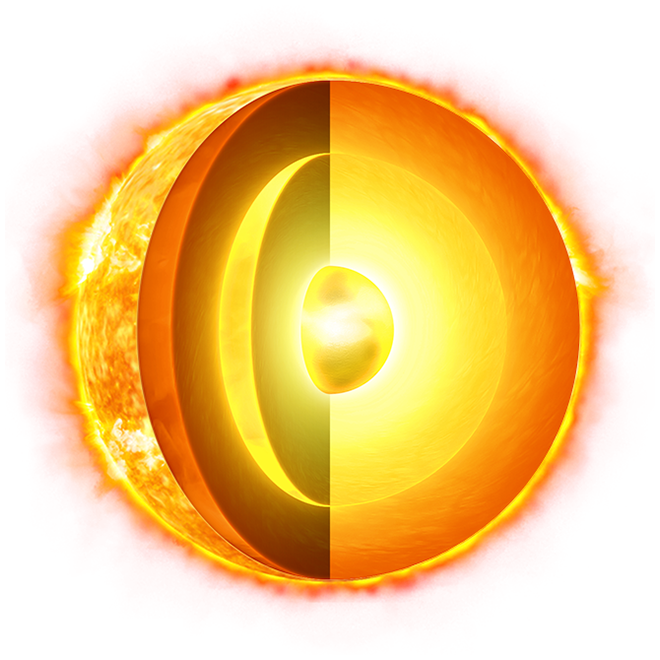
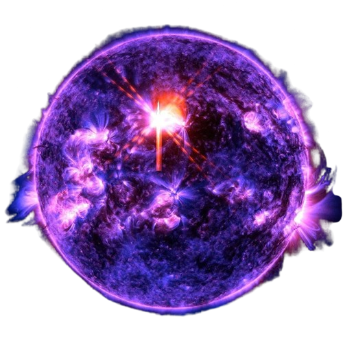
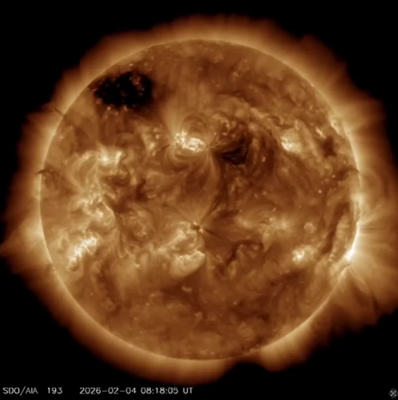

I love the Sun. It is the heart of our solar system. Its gravity impacts every object nearby, holding it all together, in its orbit. It's working nonstop. Sun and Earth are interconnected - this affects the ocean currents, weather, climate, auroras. It can be very destructive. However, did you know that the Sun is also protecting us?
Now, let's start with the structure first. The Sun is mainly made of hydrogen and helium. Other gases present in Sun's structure are f.e. oxygen, carbon, iron, silicon...It consists of several layers:
the inner core - it's the hottest area with extreme pressure and density, the nuclear fusion takes place here
the radiative zone - the energy generated by the nuclear fusion in the core is diffused through the plasma to nearby area, therefore it's called radiative zone
the convective zone - the temperatures are relatively cooler in the convective zone compared to the radiative zone, therefore energy isn't transferred by thermal radiation but rather by thermal convection, this creates currents of heated and cooled gases which then brought to the surface in form of energy
the photosphere - it's the visible surface of the Sun, bright bubbling granules of plasma and sunspots are a part of it, this is also the source of solar flares
the chromosphere - this layer contains superheated hydrogen, which emits bloody glow, which can be seen during a total solar eclipse
the corona - it is a layer of ionized gas which extends millions of kilometers into space, it's size and shape is changing constantly because of Sun's magnetic field
Now, continuing with the activity of the Sun. There are a few phenomena associated with the Sun:
the sunspots - the darker regions located within the Sun's photosphere, they are darker because they are almost 1000 degrees cooler than the surrounding area, formed by concentrations of magnetic fields that block hot gases from rising up
the solar prominence - structures of superheated gas which are held on the surface of the Sun because of tangled magnetic field lines, they look like darker loops/rings marching up from the chromosphere which are cooler than the corona
the granulation - temporary patters on the photosphere formed by the currents of gases from the convective zone, hot plasma is contained within the centre of the granule which is then released into space where it cools and then flows back and sinks back down the photosphere
the coronal mass ejections - events, causing enormous eruptions of plasma and magnetic fields from Sun's corona, they are responsible for geomagnetic storms
the solar flares - sudden releases of electromagnetic radiation (corpuscular radiation), they are formed via stretched and twisted magnetic field lines and when they grow past the critical point they are blasted away into space, this released energy strongly influences the behaviour of solar wind located within the sunspots and could trigger atmospheric and enviromental disturbances, usually accompanied by coronal mass ejections
the solar wind - it is a stream of electrically charged particles (protons, electrons and alpha particles) which emerges from coronal holes, active regions or coronal streamers, as the particles travel through space they create what is known as plasma waves (I recommend listening to them), once they reach Earth, most of them are deflected because of Earth's strong magnetic field, but there is a minority which can still penetrate it and get through an opening near the poles, this alters with Earth's atmosphere which causes beautiful Aurora Borealis and Aurora Australis in a display of colours (collision of particles and oxygen creates the color green and red, collision with nitrogen creates blue and purple)


This image is from the 4th February 2026. It shows a tremendous solar flare eruption of X-class, meaning a very intense energy outbreak that could trigger geomagnetic storms to occur or radio blackouts. We can also notice the solar prominence on the surface going along with the flare.

Fortunately, Earth has a very strong magnetosphere, which protects it from major disruptions caused by evens like this.
The activity of the Sun fluctuates because of the solar cycle. It is driven by the gas movement which impacts the magnetic field. The cycle repeats every 11 years and we can divide it into 2 states:
solar minimum : usually lasting for 4 years, the Sun is very calm without many sunspots or eruptions
solar maximum : usually lasting for 7 years, the magnetic field is in a chaotic tangled state with many sunspots, solar flares eruptions and coronal mass ejections
As for 24th May 2026, the Sun is in its declining phase, meaning fewer sunspots or solar flare eruptions. But that doesn't mean they cannot happen.
I'm really sorry for such a long intro into the topic, but I felt like this was pretty necessary to get started with. I still hope it was at least interesting for you. PS: I was kinda overfascinated yesterday at Peter Habaj's lecture about solar eclipses so that's why there's so much info...
It still feels unbelievable though, how small and incapable the Earth is compared to Sun. But Earth has something very unique the Sun never will - life That's what makes it special and extraordinary.
Cybergame 2026 has officially ended. I must say that I'm pretty satisfied with my result. Last year I ended up in the top 130. So this year's goal was to break into the top 100. In the end I ended up 54th, winning the Junior category. My goal was sucessfully reached. Nevertheless, there's always room for improvement.
My worst category was the offensive security AKA webs. I really suck at them, even when I knew where the vulnerability was, I struggled to craft a suitable exploit. So I hope that over the year I'll get better at them.
My favourite categories this year were cryptography (traditionally) and, surprisingly, malware analysis. Crypto has been my passion since the beginning of my path in cybersecurity. I get lost a lot in the beautiful math behind the code. It's the perfection of the universe - so precise and elegant. This year's tasks with elliptic curves were both brutal and intriguing. It took me some time to get around them but in the end I became obsessed. Eventually this began my whole project idea on which I'm currently working.
On the other hand, malware analysis was pretty funny. I discovered that I love the kind of malware which can damage the PC externally (not sure if that's a good thing, but let's just continue). My virtual machines have suffered considerably in the name of science - they didn't sign up for that xd. Anyway I plan to continue working with the malware I got and eventually start modifying it and testing it on other kinds of hardware (everything in a secure environment and solely for educational purposes). So I guess this is going to become my new hobby. I hope my parents won't kill me lol.
On the 1st of May, THEMCTF was supposed to take place. Things got interesting pretty quickly, even in the beginning, we could all feel that something wasn't right. The email authentication wasn't working properly, the server was occasionally unreponsive and even the admins weren't sure what was going on. The CTF was alive for about an hour and a half and then suddenly we were hit by a notice that somebody else has taken over the server because of a docker vulnerability. Unfortunately, this was a vuln in the CTFd platform itself so I assume that there were other CTFs affected by this as well. I hope the next one is going to run smoother. But at least I've got this one crossed off my bucket list, because this was certainly the shortest CTF I've ever participated in.
For those who are curious about the vulnerability, here's a quick explanation: Integer overflow could be performed in the sqlite3KeyInfoFromExprList function in SQLite versions 3.39.2 through 3.41.1. It allowed the attacker with the ability to execute arbitrary SQL statements to cause denial of service or disclose sensitive information from process memory via a crafted SELECT statement with a large number of expressions in the ORDER BY clause. This happened because the logic assumed the resulting value would always be larger than the original, but when the integer exceeded its maximum value, it got wrapped around to a very small or even negative number, that broke the assumption.
A year ago, a friend told me about this game that focused on cybersecurity. I had never heard about cybersec before, so in the beginning I didn't pay much attention to it. I remember doing my first tasks somewhere in the middle of the game - it was OSINT. The task was to track down a certain criminal that was travelling while we were searching for him. One would assume that this is just a common OSINT task, but it didn't feel that way at that time. We were both new to cybersec and I remember how desperately we were trying to find him. We were dedicated for hours every single day. AI wasn't as capable as it is today. If I uploaded those pictures to ChatGPT or Claude today I would probably get to the result in a few minutes. It is incredible to me how much did AI change over the course of a single year, not just concerning cybersecurity but everything else as well. It's slowly starting to play an irreplacable part in our daily lives and it'prone to grow. Now, don't get me wrong - I love robotic engineering (I've built several robots at home :D), synthetic algorithms behind AI that the humanity was able to create...it's just that sometimes I get doubts about our future. Will AI be integrated to the system so well, it's going to become crucial for our survival? In that case, are we going to become just some passive consumers dependent on it?
Maybe I'm philosophising more than I should, but it just a thought that crosses my mind...
PS: Tade, if you're reading this, I just wanted to say thanks for introducing me to cybersecurity and informatics in general. It really helped me to make some important life decisions
testing
in progress
in progress